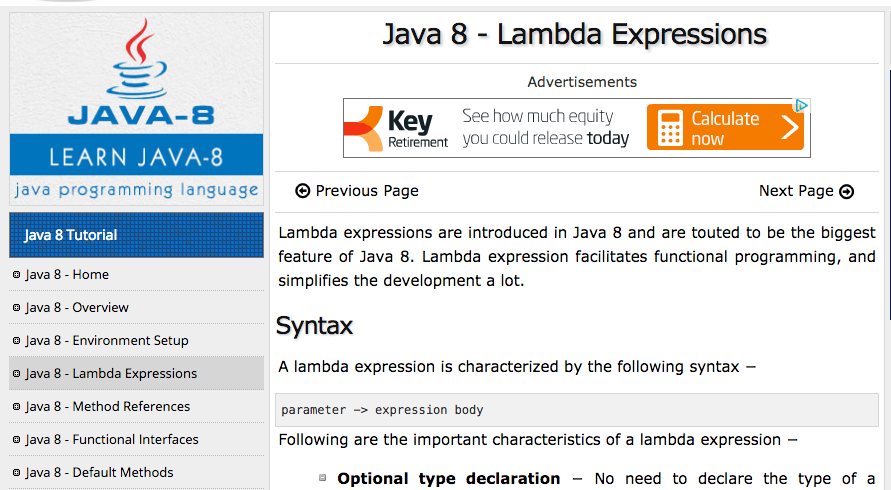

λ-calcul et cie
Août 2016 - OuiCar
Guillaume Claret
λ-calcul

- langage de programmation
- années 30
- uniquement des fonctions
Définition
- variable : x
- fonction : x => e
- application : f(x)
Notation
Traditionnellement :
- fonction : λx. e
- application : f x
En Elm
- fonction :
\x -> e - application :
f x
En Java
Exemples
x => x // identité
x => z // fonction constante
x => y => x // premier élément
(x => y => x)(a)(b) // curryfication (donne 'a')
f => g => x => f(g(x)) // compositionExemples
Définition de variable :
(x => e2)(e1) // const x = e1; return e2;Booléens :
x => y => x // true
x => y => y // false
b(e1)(e2) // b ? e1 : e2Couples :
f => f(a)(b) // [a, b]
c(x => y => x) // c[0]
c(x => y => y) // c[1]Exemples
Nombres :
x => f => x // 0
x => f => f(x) // 1
x => f => f(f(x)) // 2
x => f => f(f(f(x))) // 3
n => x => f => n(f(x))(f) // n => n + 1Récurrence / boucles :
(x => x(x))(x => x(x)) // while (true) {}Exemples
Émulateur de PC x86 :
... // c'est possibleLe λ-calcul est un langage de programmation complet.
Avantages
- simple pour penser
- les autres langages fonctionnels sont des extensions
du λ-calcul
Définition d'une fonction
(x => e1)(e2)
s'évalue en :
"e1 où l'on a substitué x par e2"
Définition purement syntaxique.
Exemple
const increment = n => n + 1;
const double = n => 2 * n;
return double(increment(4));Évaluation à droite :
return double(5);
return 2 * 5;
return 10;Évaluation à gauche :
return 2 * increment(4);
return 2 * 5;
return 10;Confluence
On obtient toujours le même résultat quel que soit l'ordre d'évaluation.
"referential transparency"
Liens avec les maths
La notion de fonction est différente.
-
Impossible en maths :
// while (true) {} (x => x(x))(x => x(x)) -
Impossible en λ-calcul :
f : ℝ -> ℝ
x -> x + 1
Liens avec les maths
Les fonctions du λ-calcul correspondent aux preuves.
| Informatique | Math |
|---|---|
| programme | preuve |
| type | énoncé de théorème |
| type produit (tableau, couple, ...) | A et B |
| type somme (union disjointe) | A ou B |
| type fonction | A implique B |
| polymorphisme étendu | pour tout x dans E, ... |
| type récursifs | récurrence |
Normalement
Si on structure son code avec seulement :
- type produits
- type sommes
- fonctions
tout se passe bien.
Merci.
Blog technique :
ouicar.github.io